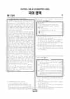

문제지

시험지 만들기준비하고 있어요. 열리면 아래 탭에서 바로 쓸 수 있어요.
전국연합학력평가 · 시·도교육청 주관
2024년 10월 고2 학력평가 국어 1등급컷은 원점수 84점(추정), 표준점수 최고점은 151점입니다.
원점수 1등급컷은 공식 발표값이 아니라 EBSi·입시기관 값입니다. 등급별 값은 등급컷 표, 출처 구분은 데이터 원칙에 있습니다.

| 등급 | 표준점수 이상 | 인원(명) | 비율 |
|---|---|---|---|
| 1 | 136 | 13,944 | 4.36% |
| 2 | 127 | 24,374 | 7.62% |
| 3 | 117 | 35,469 | 11.1% |
| 4 | 105 | 56,875 | 17.79% |
| 5 | 92 | 66,265 | 20.73% |
| 6 | 84 | 50,590 | 15.83% |
| 7 | 75 | 37,445 | 11.71% |
| 8 | 70 | 25,849 | 8.09% |
| 9 | 57 | 8,855 | 2.77% |
시·도교육청 공개 자료
출처: 시·도교육청이 공개한 전국연합학력평가 성적 분석·통계자료(공개 자료 보기).
EBSi 응답자 기준으로 가장 많이 틀린 문항은 28번(3점)이고, 오답률은 74%입니다. 상위 15문항 중 1문항은 정답보다 한 오답을 고른 사람이 더 많았습니다(28번: 정답 ⑤ 26%, ② 27.7%). 오답률 50%를 넘은 문항은 13개입니다.
| 순위 | 문항 | 배점 | 오답률 | 정답 | 많이 고른 오답 |
|---|---|---|---|---|---|
| 1 | 28번 | 3점 | 74% | ⑤ | ② 27.7% |
| 2 | 11번 | 2점 | 65.3% | ⑤ | ④ 34.4% |
| 3 | 38번 | 3점 | 63.8% | ④ | ⑤ 31.3% |
| 4 | 33번 | 2점 | 62.8% | ⑤ | ② 26.2% |
| 5 | 36번 | 2점 | 62.2% | ⑤ | ④ 28.4% |
| 6 | 29번 | 2점 | 60.5% | ⑤ | ③ 23.3% |
| 7 | 14번 | 2점 | 59.7% | ① | ② 19.7% |
| 8 | 18번 | 2점 | 59.1% | ④ | ⑤ 26% |
| 9 | 32번 | 3점 | 57.5% | ④ | ③ 16.6% |
| 10 | 13번 | 2점 | 57.1% | ④ | ③ 18.3% |
| 11 | 22번 | 2점 | 55.6% | ① | ③ 23.9% |
| 12 | 23번 | 2점 | 52.2% | ⑤ | ② 31.3% |
| 13 | 39번 | 2점 | 50.7% | ② | ③ 21.4% |
| 14 | 27번 | 2점 | 48.4% | ⑤ | ③ 16.1% |
| 15 | 44번 | 2점 | 44% | ⑤ | ④ 26.6% |
EBSi 가채점 응답자 기준 · 전 문항 중 오답률 상위 15문항
출처: EBSi 역대 등급컷·오답률 공개 화면. 가채점에 참여한 EBSi 이용자 응답이라 전체 응시자 정답률과는 다를 수 있습니다.
발행 기관: 시·도교육청(전국연합학력평가). 파일 위치: 이 사이트가 보관한 사본. 저작권은 발행 기관에 있습니다. 원본과 다르거나 게시 중단이 필요하면 연락처로 알려 주세요. 등급컷 출처 구분은 데이터 원칙에서 설명합니다.
막대 색은 역대 대비 난이도 · 진한 막대가 이 시험 · 막대를 누르면 그 회차로 이동
| 회차 | 1등급컷 | 표점 최고 | 1등급 표점 | 난이도 |
|---|---|---|---|---|
| 10월 학평2024년 고2이 시험 | 84 | 151 | 136 | 매우 어려움 |
| 9월 학평2024년 고2 | 89 | 144 | 134 | 쉬움 |
| 6월 학평2024년 고2 | 87 | 149 | 137 | 어려움 |
| 3월 학평2024년 고2 | 77 | 163 | 137 | 매우 어려움 |
| 9월 학평2023년 고2 | 85 | 149 | 135 | 어려움 |
| 6월 학평2023년 고2 | 86 | 146 | 134 | 어려움 |
| 3월 학평2023년 고2 | 79 | 158 | 136 | 매우 어려움 |
| 11월 학평2022년 고2 | 90 | 142 | 134 | 쉬움 |
| 9월 학평2022년 고2 | 85 | 150 | 136 | 어려움 |
| 6월 학평2022년 고2 | 91 | 141 | 133 | 매우 쉬움 |
국어는 교육청 채점 결과 1등급 구분 표준점수가 136점, 최고점이 151점(147명)으로 9월(1등급 134점, 최고점 144점)보다 어려웠습니다. 응시자는 319,666명, EBSi 가채점 응답자 기준 오답률 50%를 넘은 문항은 13개였습니다.
26~29번은 전극에 쌓이는 전하의 용량인 정전용량의 변화로 접촉 없이 습도를 감지하는 정전용량형 근접 습도 센서를 다룬 지문입니다. 엘리베이터 등에서 공중 보건을 위해 쓰인다는 설명에서 출발합니다. 가장 많이 틀린 28번(3점, 74.0%)은 센서에 손가락을 가까이 가져갈 때 측정된 정전용량 변화를 다룬 학습지 <보기> 문항, 29번(60.5%)은 수분 유지 기판에 흡착된 물 분자가 탈착되는 까닭을 추론하는 문항이었습니다.
16~21번은 예술 작품을 현실 세계를 모방해 만든 사물로 규정한 아리스토텔레스(가)와, 1968년 브로타스가 자기 아파트에 전시한 '현대 미술관 독수리부'를 계기로 로절린드 크라우스가 '포스트매체 조건'과 '기술적 지지체'라는 개념을 제시한 과정(나)을 엮은 지문이었습니다.
30~34번은 지면과 그 공중·지하를 포함하는 민법상 토지 소유권을 다룬 지문으로, 지문의 ㉠과 <보기>의 상린관계를 비교하는 33번(62.8%)이 어려웠습니다. 문법은 연결 어미 '-고'의 다양한 의미를 다룬 11번(65.3%), 한 단어가 문법 환경에 따라 여러 품사로 쓰이는 예를 고르는 14번(59.7%)이 까다로웠습니다.
문학은 환도 후 회사에서 밀려나는 김기사를 그린 김광식 「213호 주택」(22~25번), 꿈속에서 호랑나비 날개를 빌려 개암정을 찾아가는 조성신 「개암정가」와 김창협 「청청각기」(35~38번), 용왕의 원한으로 저승에 간 태종 황제를 신하 위징이 돕는 「당태종전」(39~42번), 병석의 어머니를 떠올리는 김광균 「목련나무 옆에서」와 정일근 「그리운 곳으로 돌아보라」(43~45번)였습니다.
조선 시대 사대부의 자연관을 다룬 <보기>로 (가), (나)를 감상하는 38번(63.8%), 「개암정가」를 입몽-개암정 방문-경관 감상-모임-각몽으로 구조화한 36번(62.2%)이 문학에서 어려웠습니다. 화법·작문은 시간을 재고 위험을 알리는 식물을 다룬 발표(1~3번), 방치된 학교 연못을 되살리는 방안 회의(4~7번), 자전거 주차장의 방치 자전거 문제를 다룬 지역 신문 기고(8~10번)였습니다.